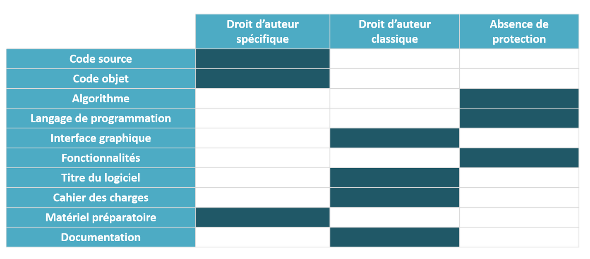
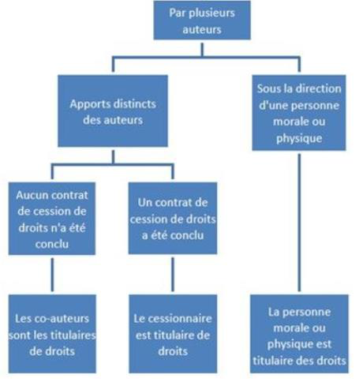
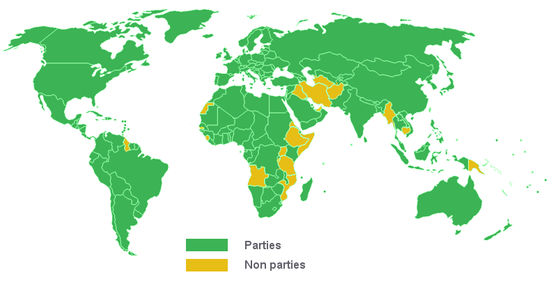

COURS _2023-2024
PROPRIÉTÉS INTELLECTUELLES 2023-2024 Marie Moin LE DROIT D’AUTEUR Livre Ier : Le droit d'auteur (Articles L111-1 à L136-4) Article L111-1 du code de la propriété intellectuelle (CPI) « L'auteur d'une œuvre de l'esprit jouit sur cette œuvre, du seul fait de sa création, d'un droit de propriété incorporelle exclusif et opposable à tous Ce droit comporte des attributs d'ordre intellectuel et moral ainsi que des attributs d'ordre patrimonial, qui sont déterminés par les livres Ier et III du présent code.» QUELQUES DATES Convention de Berne pour la protection des œuvres littéraires et artistiques signée le 9 septembre 1886 Loi du 11 mars 1957 sur la propriété littéraire et artistique Loi du 3 juillet 1985 relative aux droits d'auteur et aux droits des artistes-interprètes, des producteurs de phonogrammes et de vidéogrammes et des entreprises de communication audiovisuelle Loi du 1er juillet 1992 abrogeant les lois de 1957 et de 1985, et incorporant leurs dispositions dans le Code de la propriété intellectuelle Directive du 14 mai 1991 concernant la protection juridique des programmes d'ordinateur Loi du 10 mai 1994 portant mise en œuvre de la directive du 14 mai 1991 concernant la protection juridique des programmes d'ordinateur La loi du 1er août 2006 relative au droit d’auteur et aux droits voisins dans la société de l’information, dite loi DADVSI 3 LES CONDITIONS DE LA PROTECTION Une seule condition : l’originalité Plus exactement, l’œuvre doit d’abord être éligible à la protection par le droit d’auteur et la protection sera accordée si la forme sous laquelle s’est exprimée une idée est originale. Il faut donc définir : ➢ Les œuvres éligibles ➢ Les éléments protégeables dans une œuvre éligible ➢ Le critère d’originalité 4 LES CONDITIONS DE LA PROTECTION Les œuvres éligibles Article L112-2 du CPI : « Sont considérés notamment comme œuvres de l'esprit au sens du présent code : 1° Les livres, brochures et autres écrits littéraires, artistiques et scientifiques ; 2° Les conférences, allocutions, sermons, plaidoiries et autres œuvres de même nature ; 3° Les œuvres dramatiques ou dramatico-musicales ; … 4° 13° Les logiciels, y compris le matériel de conception préparatoire ; … ». Remarques : ➢ Cette liste n’est pas exhaustive et la jurisprudence a accordé sa protection à d’autres œuvres (ex : un site web, un couteau de cuisine, un jeu vidéo) ➢Le logiciel est expressément visé par l’article L112-2, Il relève du droit d’auteur tout en étant soumis à un régime dérogatoire (un droit d’auteur « spécifique » en opposition au droit d’auteur « classique ») 5 LES CONDITIONS DE LA PROTECTION Les œuvres éligibles - Cas particulier du logiciel Le code source et le code objet La Cour de justice de l’Union européenne estime que « le code source et le code objet d’un programme d’ordinateur sont des formes d’expression de celui-ci, qui méritent, par conséquent, la protection par le droit d’auteur sur les programmes d’ordinateur ». Le matériel de conception préparatoire Le matériel de conception préparatoirecouvre « les travaux préparatoires de conception aboutissant au développement d’un programme, à condition qu’ils soient de nature à permettre la réalisation d’un programme d’ordinateur à un stade ultérieur ». Le matériel de conception préparatoire est protégé par le droit d’auteur au même titre que le logiciel et les mêmes dérogations lui seront appliquées. - Pas de définition du matériel de conception préparatoire en droit français. Le matériel de conception préparatoire peut regrouper, par exemple, les analyses fonctionnelles et organiques, maquettes, organigrammes, spécifications internes et externes et l’architecture fonctionnelle. 6 LES CONDITIONS DE LA PROTECTION Les œuvres éligibles - Cas particulier des œuvres complexes La création de certaines œuvres (jeu vidéo par exemple) nécessite la collaboration de nombreux auteurs aux compétences très variées. Musiciens, graphistes, développeurs, scénaristes sont souvent associés pour la réalisation de certaines œuvres qui contiennent des éléments relevant de régimes juridiques parfois différents. Cour de cassation du 25 juin 2009 La cour de cassation a décidé en 2009 que ces « œuvres multimédia » sont « des œuvres complexes ». « Un jeu vidéo est une œuvre complexe qui ne saurait être réduite à sa seule dimension logicielle, quelle que soit l’importance de celle-ci, de sorte que chacune de ses composantes est soumise au régime qui lui est applicable en fonction de sa nature ». 7 LES CONDITIONS DE LA PROTECTION L’idée est de libre parcours Les éléments protégeables dans une œuvre éligible. L’idée est de libre parcours. Il est impossible en France de protéger une idée par un droit de propriété intellectuelle. Les idées, même si leur valeur économique est certaine, ne peuvent être protégées par le droit d’auteur. Impossible d’obtenir un monopole opposable à tous sur une idée. La préservation du secret est cependant possible. Seule la forme sous laquelle l’idée s’exprime est protégeable*. 8 LES CONDITIONS DE LA PROTECTION


L’idée est de libre parcours Idée TŒuvre Pas de protection par un droit de Protection possible par un propriété intellectuelle droit de propriété intellectuelle ➢À compter du moment « t », l’idée devient une œuvre protégeable, même non achevée l’œuvre est protégeable ➢ Grande difficulté à déterminer ce moment « t » ➢ Moment « t » souvent déterminant pour apprécier s’il y a reproduction interdite 9 LES CONDITIONS DE LA PROTECTION L’idée est de libre parcours - Cas particulier du logiciel L’algorithme La loi définit l’algorithme comme « la résolution de problèmes par la mise en œuvre de suite d’opérations élémentaires selon un processus défini aboutissant à une solution ». Il est un concept mathématique abstrait. L’algorithme est classé au rang des idées et n’est donc pas protégeable par le droit d’auteur. Le langage de programmation Pour la Cour de Justice de l’Union Européenne, le langage de programmation et le format de fichiers de données utilisés dans le cadre d’un programme d’ordinateur pour exploiter certaines de ses fonctions ne constituent une forme d’expression de ce programme et ne sont donc pas protégés par le droit d’auteur. Les fonctionnalités Pour la Cour de Justice de l’Union Européenne, admettre que les fonctionnalités d’un programme d’ordinateur puissent être protégées par le droit d’auteur reviendrait à offrir la possibilité de monopoliser les idées, au détriment du progrès technique et du développement industriel. Les fonctionnalités ne sont donc pas protégeables par le droit d’auteur. 10 LES CONDITIONS DE LA PROTECTION L’idée est de libre parcours La protection cependant possible par le secret des affaires La loi relative à la protection du secret des affaires, adoptée le 30 juillet 2018, apporte un cadre légal permettant la protection d’informations stratégiques pour une entreprise et qui n’étaient jusqu’alors pas protégées. L’algorithme peut entrer dans ce cadre. Les conditions à remplir : ➢ Il ne doit pas être connu ou aisément accessible pour les personnes du même secteur d’activité ➢ Il doit revêtir une valeur commerciale effective ou potentielle ➢ il doit faire l’objet de mesures de protection raisonnables pour en conserver le secret. EX : ▪Mise en place d’une charte informatique au sein de l’entreprise, ▪Mise en place d’une politique de gestion des accès ▪Existence d’accords de confidentialité avec les tiers y ayant eu accès Si ces conditions sont remplies le détenteur de cet algorithme pourra obtenir réparation de son préjudice en cas d’obtention, utilisation ou divulgation illicite de cet algorithme. 11 LES CONDITIONS DE LA PROTECTION Cas particulier du logiciel 
https://www.app.asso.fr/centre-information/base-de-connaissances/code-logiciels/la-protection-des-elements-composant-un-logiciel/labsence-de-protection-par-le-droit-dauteur
12
LES CONDITIONS DE LA PROTECTION
Une seule condition : l’originalité.
Article L112-1 du CPI : « Les dispositions du présent code protègent les droits des auteurs sur toutes les œuvres de l'esprit , quels qu'en soient le genre, la forme d'expression , le mérite ou la destination. »
La condition d'originalité n'est pas expressément contenue dans la loi, elle est pourtant pour les juges l’élément indispensable à la protection par le droit d’auteur.
L’originalité est l’empreinte de la personnalité de l’auteur. C’est une notion subjective (différente de la nouveauté). Pour les juges, l’originalité « doit être appréciée dans son ensemble au regard de la combinaison des différents éléments, même banals, la composant ». (Civ. 1, 10 avr. 2019, nº 18-13.612)
La reconnaissance du droit d’auteur à des œuvres « utilitaires » (design industriel, logiciel) fait évoluer cette définition et les juges parlent plus pour ce types d’œuvres d’effort de création, d’effort individualisé que d’empreinte de la personnalité. 13
LES CONDITIONS DE LA PROTECTION
L’absence de formalités
Article L111-1 du CPI: « L'auteur d'une œuvre de l'esprit jouit sur cette œuvre, du seul fait de
sa création, d'un droit de propriété incorporelle exclusif et opposable à tous… »
Aucune formalité à accomplir pour bénéficier du droit d’auteur.
Article L113-1 du CPI : «La qualité d’auteur appartient, sauf preuve contraire, à celui ou ceux
sous le nom de qui l’œuvre est divulguée.»
Celui qui se déclare auteur en publiant une œuvre sous son nom est présumé être
effectivement l’auteur de l’œuvre.
14
LES CONDITIONS DE LA PROTECTION
La nécessité de se constituer une preuve
Aucune formalité à accomplir pour bénéficier du droit d’auteur mais il est indispensable de pouvoir prouver la date de sa création.
Si le dépôt n’est pas créateur de droit, il faut trouver un moyen de prouver la création. Pour ce faire, plusieurs options :
➢Envoi d’un recommandé à soi-même
➢Publication de l’œuvre
➢Dépôt auprès de l’Agence pour la Protection des Programmes (APP)
➢Dépôt auprès d’un notaire ou d’un huissier
➢Dépôt auprès de la SCAM, SGDL
➢Dépôt auprès de l’INPI : enveloppe Soleau(documents uniquement)
➢Etc. 15
LES TITULAIRES DES DROITS
L’auteur individuel - Création en dehors de tout contrat
Ce cas est le plus simple puisque cet auteur est seul titulaire de l’ensemble des droits, patrimoniaux et moraux. Voir Infra.
S’il ne souhaite pas exercer ses droits lui-même et veut en confier l’exploitation à un tiers, il faudra nécessairement un contrat écrit. Voir Infra.
En l’absence de contrat écrit, les tiers ne pourront prétendre détenir des droits d’exploitation. S’ils ont versé un prix à l’auteur, cela ne peut leur conférer plus de droits que ceux réservés à l’utilisateur « légitime » par la loi. Voir Infra.
16
LES TITULAIRES DES DROITS
L’auteur individuel - Création dans le cadre d’un contrat de travail
Article L111-1 du CPI : « … L'existence ou la conclusion d'un contrat de louage d'ouvrage ou de service par l'auteur
d'une œuvre de l'esprit n'emporte pas dérogation à la jouissance du droit reconnu par le premier alinéa, sous réserve
des exceptions prévues par le présent code … »
Donc le fait que l’auteur réalise son œuvre dans le cadre d’un contrat de travail n’apporte pas de dérogation. Les droits sur son œuvre lui appartiennent et, si l’employeur veut les obtenir, il doit se les faire céder en respectant les exigences imposées par la loi pour les contrats de cession de droits.
Article L131-1 du CPI : « La cession globale des œuvres futures est nulle »
Cette disposition interdit d’insérer dans les contrats de travail des clauses de cession automatiques.
17
LES TITULAIRES DES DROITS
L’auteur individuel - Création dans le cadre d’un contrat de travail
Cas particulier de l’auteur du logiciel
Art L113-9du CPI : « Sauf dispositions statutaires ou stipulations contraires, les droits patrimoniaux sur les logiciels et leur documentation créés par un ou plusieurs employés dans l’exercice de leurs fonctions ou d’après les instructions de leur employeur sont dévolus à l’employeur qui est seul habilité à les exercer »
Les droits patrimoniaux portant sur le logiciel appartiennent donc à l’employeur. Le salarié ne conserve que ses droits moraux. Voir infra pour les droits moraux.
Remarque :
Ce régime ne s’applique que pour les logiciels conçus pendant l’exécution du contrat de travail. Un logiciel développé par un ancien salarié à partir de codes sources disponibles en libre accès sur internet et après son départ de l’entreprise lui appartient.
18
LES TITULAIRES DES DROITS
L’auteur individuel – Le stagiaire
Le stagiaire n’est pas lié par un contrat de travail à l’entreprise qui l’accueille et n’a pas le statut de salarié. Son passage en entreprise n’a qu’un but pédagogique et de formation, même s’il peut être tenu d’exécuter des tâches à caractère professionnel.
Tout ce qu’il crée seul pendant son stage est réputé lui appartenir, comme un auteur indépendant, l’exception du logiciel ne s’applique pas au stagiaire.
Les droits sur son œuvre lui appartiennent et, si la structure qui l’accueille veut les obtenir, elle doit se les faire céder en respectant les exigences imposées par la loi pour les contrats de cession de droits.
Cette cession devrait être distincte de la convention (le plus souvent elle est une des clauses de la convention) et prévoir une rémunération différente de la gratification. La gratuité est possible mais doit être justifiée.
19
LES TITULAIRES DES DROITS
L’auteur individuel - Création dans le cadre d’un autre contrat
Article L111-1 : « … L'existence ou la conclusion d'un contrat de louage d'ouvrage ou de service par l'auteur
d'une œuvre de l'esprit n'emporte pas dérogation à la jouissance du droit reconnu par le premier alinéa, sous
réserve des exceptions prévues par le présent code … »
Les droits sur une œuvre réalisée dans le cadre d’un contrat de prestation de service, d’un contrat de commande ou d’un autre contrat appartiennent à l’auteur.
Le fait que ce contrat prévoit une rémunération au profit de l’auteur ne signifie pas que l’auteur a cédé ses droits.
Si le cocontractant entend disposer des droit patrimoniaux sur l’œuvre, il devra se les faire céder en respectant les exigences imposées par la loi pour les contrats de cession de droits.
20
LES TITULAIRES DES DROITS
La pluralité d’auteurs - Trois hypothèses
Article L113-2 du CPI : « Est dite de collaboration l’œuvre à la création de laquelle ont concouru plusieurs personnes physiques.
Est dite composite l’œuvre nouvelle à laquelle est incorporée une œuvre préexistante sans la collaboration de l'auteur de cette dernière.
Est dite collective l’œuvre créée sur l'initiative d'une personne physique ou morale qui l'édite, la publie et la divulgue sous sa direction et son nom et dans laquelle la contribution personnelle des divers auteurs participant à son élaboration se fond dans l'ensemble en vue duquel elle est conçue, sans qu'il soit possible d'attribuer à chacun d'eux un droit distinct sur l'ensemble réalisé. »
Plusieurs auteurs peuvent donc contribuer à la réalisation d’une œuvre. La loi distingue trois hypothèses qui entraîneront des conséquences au niveau de la titularité.
Ce sont uniquement les circonstances de la création qui dicteront le régime applicable en cas de pluralité d’auteur.
21
LES TITULAIRES DES DROITS
La pluralité d’auteurs - Œuvre composite
Article L113-4 du CPI : « L’œuvre composite est la propriété de l'auteur qui l'a réalisée, sous réserve des droits de l'auteur de l'œuvre préexistante. »
Article L112-3 du CPI : « Les auteurs de traductions, d’adaptations, transformations ou arrangements des œuvres de l’esprit jouissent de la protection instituée par le présent code sans préjudice des droits de l’auteur de l’œuvre originale. »
L’ auteur de l’œuvre préexistante n’a de droit que sur son œuvre. Il n’a pas de droit sur l’œuvre composite. Il percevra une rémunération au titre de l’utilisation de son œuvre.
L’auteur de l’œuvre composite dispose de tous les droits sur cette œuvre mais il devra pour l’exploiter respecter le contrat qu’il a passé avec l’auteur de l’œuvre préexistante. Chacun des auteurs est donc propriétaire de son apport, sous réserve qu’il soit original.
Attention, pour le juges, « les versions successives d’un progiciel nécessairement évolutif tant au niveau des évolutions technologiques, médicales et des besoins de la clientèle, qui doivent être rendues compatibles avec les précédentes, ne constituent pas en tant que telle une œuvre originale nouvelle ». (CA Versailles 4/10/01). L’auteur des versions successives du logiciel n’est pas auteur d’une œuvre composite.
22
LES TITULAIRES DES DROITS
La pluralité d’auteurs - Œuvre de collaboration
Article L113-3 du CPI : « L'œuvre de collaboration est la propriété commune des coauteurs.
Les coauteurs doivent exercer leurs droits d'un commun accord.
En cas de désaccord, il appartient à la juridiction civile de statuer.
Lorsque la participation de chacun des coauteurs relève de genres différents, chacun peut, sauf convention contraire, exploiter séparément sa contribution personnelle, sans toutefois porter préjudice à l'exploitation de l'œuvre commune.»
« Les coauteurs d’une œuvre de collaboration doivent avoir un dessein commun et avoir réalisé leurs créations respectives sous l’empire d’une inspiration commune et en se concertant et ce, sur un pied suffisant d’égalité. » (CA Paris 27/02/13)
Les coauteurs doivent donc s’entendre pour l’exploitation de l’œuvre et peuvent, soit l’exploiter d’un commun accord, soit céder les droits à l’un d’entre eux, soit céder les droits à un tiers.
23
LES TITULAIRES DES DROITS
La pluralité d’auteurs - Œuvre collective
Article L113-4 du CPI : « L’œuvre collective est, sauf preuve contraire, la propriété de la personne physique ou morale sous le nom de laquelle elle est divulguée.
Cette personne est investie des droits de l'auteur. »
Cette qualification évite les contrats pour l’exploitation d’une œuvre et est naturellement recherchée dans le cas des créations salariées.
Pour que l’œuvre soit qualifiée de collective, il faut démontrer qu’un maître d’œuvre a contrôlé le processus de création et que l’œuvre ait été divulguée sous son nom. En revanche, il n’est pas indispensable que les contributions ne soient pas identifiables.
Pour les juges « la qualification d’œuvre collective exige de démontrer que la personne morale est à l’initiative de l’œuvre, qu’elle a endossé un rôle prépondérant à tous les stades de la création de telle sorte que l’œuvre se trouve marquée par sa maîtrise d’œuvre intellectuelle et qu’elle exploite l’œuvre sous son nom ». (TGI Lyon, 16/05/17)
24
LES TITULAIRES DES DROITS
Auteur unique - Synthèse


25
https://www.app.asso.fr/centre-information/base-de-connaissances/code-logiciels/la-titularite-des-droits/la-modification-de-la-titularite-le-contrat-de-cession
LES TITULAIRES DES DROITS
Pluralité d’auteurs - Synthèse

26 https://www.app.asso.fr/centre-information/base-de-connaissances/code-logiciels/la-titularite-des-droits/la-modification-de-la-titularite-le-contrat-de-cession LE DROIT MORAL Article L121-1 du CPI : « L'auteur jouit du droit au respect de son nom, de sa qualité et de son œuvre. Ce droit est attaché à sa personne. Il est perpétuel, inaliénable et imprescriptible. Il est transmissible à cause de mort aux héritiers de l'auteur. L'exercice peut être conféré à un tiers en vertu de dispositions testamentaires.» Ce droit moral est l’expression juridique du lien qui unit l’auteur à son œuvre. Il est : ➢Perpétuel parce qu’il ne s’éteint pas à la mort de l’auteur. ➢ Inaliénable parce que l’auteur ne peut ni le céder, ni y renoncer. L’inaliénabilité du droit moral est un principe d’ordre public auquel on ne peut déroger par contrat ➢ Imprescriptible parce que l’auteur peut l’invoquer quand il le souhaite. Ce droit moral est composé de quatre attributs : ➢Le droit à la paternité ➢Le droit à la divulgation ➢Le droit au respect de l’œuvre ➢Le droit de retrait et de repentir 27 LE DROIT MORAL Le droit moral - Droit à la paternité L’auteur peut exiger que son nom ou ses titres soient mentionnés sur son œuvre. Nul ne peut le forcer à y renoncer ou à accepter que l’œuvre soit divulguée sous le nom d’un autre auteur. Il garde cependant la faculté, de publier son œuvre de manière anonyme ou sous un pseudonyme. Lorsque l’auteur cède tous ses droits, il conserve son droit au nom puisque le droit moral est incessible Même lorsque l’œuvre est tombée dans le domaine public, ce droit au nom subsiste puisqu’il est perpétuel. Remarque : Une œuvre, même dans le domaine public n’est jamais totalement libre de droits puisque les droits moraux subsistent. 28 LE DROIT MORAL Le droit moral - Droit de divulgation Article L121-2 du CPI : « L'auteur a seul le droit de divulguer son œuvre. Sous réserve des dispositions de l'article L.132-24, il détermine le procédé de divulgation et fixe les conditions de celle-ci. Après sa mort, le droit de divulgation de ses œuvres posthumes est exercé leur vie durant par le ou les exécuteurs testamentaires désignés par l'auteur. A leur défaut, ou après leur décès, et sauf volonté contraire de l'auteur, ce droit est exercé dans l'ordre suivant : par les descendants, par le conjoint contre lequel n'existe pas un jugement passé en force de chose jugée de séparation de corps ou qui n'a pas contracté un nouveau mariage, par les héritiers autres que les descendants qui recueillent tout ou partie de la succession et par les légataires universels ou donataires de l'universalité des biens à venir.» L’auteur est donc le seul à pouvoir décider du moment et des modalités de la divulgation de son œuvre. Nul ne peut le contraindre à rendre publique une œuvre dont il n’est pas satisfait, quand bien même on lui en aurait passé commande. Remarque : Un auteur qui a cédé ses droits d’exploitation ne peut plus invoquer son droit moral pour interdire la divulgation de son œuvre au public. Cette interdiction ne figure pas dans la loi mais découle de l’esprit de la loi et de l’exigence de bonne foi. 29 LE DROIT MORAL Le droit moral - Droit au respect de l’intégrité de l’œuvre L’auteur peut invoquer son droit au respect pour s’opposer aux atteintes portées à l’intégrité de son œuvre (modification, colorisation, destruction, démantèlement, agrégation à d’autres éléments, etc.). Ce droit est particulièrement invoqué en cas d’adaptation car une adaptation entraîne nécessairement des modifications et l’auteur conserve le droit d’agir contre une modification qu’il estimerait irrespectueuse de l’œuvre. Ce droit est aussi invoqué quand l’utilisation méconnait la volonté, l’esprit, que l’auteur a donnés à l’œuvre (détournements politiques ou promotionnels, utilisation pour illustrer des propos contraires aux positions de l’auteur, etc.). 30 LE DROIT MORAL Le droit moral - Droit de retrait et droit de repentir Article L121-4 du CPI : « Nonobstant la cession de son droit d'exploitation, l'auteur, même postérieurement à la publication de son œuvre, jouit d'un droit de repentir ou de retrait vis-à-vis du cessionnaire. Il ne peut toutefois exercer ce droit qu'à charge d'indemniser préalablement le cessionnaire du préjudice que ce repentir ou ce retrait peut lui causer. Lorsque, postérieurement à l'exercice de son droit de repentir ou de retrait, l'auteur décide de faire publier son œuvre, il est tenu d'offrir par priorité ses droits d'exploitation au cessionnaire qu'il avait originairement choisi et aux conditions originairement déterminées.» En pratique, l’auteur devant indemniser préalablement le cessionnaire, ce droit est très rarement invoqué. 31 LE DROIT MORAL Cas particulier du logiciel Article L 121-7 du CPI : «Sauf stipulation contraire plus favorable à l'auteur d'un logiciel, celui-ci ne peut : 1° S'opposer à la modification du logiciel par le cessionnaire des droits mentionnés au 2° de l'article L. 122-6, lorsqu'elle n'est préjudiciable ni à son honneur ni à sa réputation ; 2° Exercer son droit de repentir ou de retrait. » L’auteur d’un logiciel ne bénéficie donc pas du droit de retrait et de repentir. Son droit au respect est limité, il doit prouver une atteinte à son honneur ou à sa réputation. Il ne lui reste réellement que le droit au nom. 32 LES DROITS PATRIMONIAUX Définition Article L113-4 alinéa 1 du CPI : « L'auteur jouit, sa vie durant, du droit exclusif d'exploiter son œuvre sous quelque forme que ce soit et d'en tirer un profit pécuniaire.» Les droits patrimoniaux représentent une sorte de monopole d’exploitation dont est bénéficiaire l’auteur et qui lui permettent de s’opposer à toute exploitation de son œuvre sans autorisation et donc sans rémunération. Ce monopole connaît cependant de nombreuses exceptions qui permettent aux utilisateurs légitimes de se dispenser de l’autorisation de l’auteur dans certaines hypothèses. L’auteur pourra par contrat disposer des droits qui lui sont reconnus. En l’absence de contrat, ces droits sont réputés lui appartenir. Ce régime prévu par le code de la propriété intellectuelle est donc celui qui s’appliquera « par défaut ». 33 LES DROITS PATRIMONIAUX Durée du monopole Article L113-4 alinéa 2 du CPI : « Au décès de l'auteur, ce droit persiste au bénéfice de ses ayants droit pendant l'année civile en cours et les soixante-dix années qui suivent. » Le monopole dure donc jusqu’à 70 ans après la mort de l’auteur. Pour les œuvres de collaboration, l'année civile prise en considération est celle de la mort du dernier vivant des collaborateurs. Pour les œuvres pseudonymes, anonymes ou collectives, la durée du droit exclusif est de soixante-dix années à compter du 1er janvier de l'année civile suivant celle où l'œuvre a été publiée. La date de publication est déterminée par tout mode de preuve de droit commun, et notamment par le dépôt légal. La transmission de ces droits au décès de l’auteur suit les règles de droit commun. - Le dépôt légal est l’obligation pour tout éditeur, imprimeur, producteur, importateur, de déposer chaque document qu’il édite, imprime, produit ou importe, auprès de l’organisme habilité à recevoir le dépôt en fonction de la nature du document. Cette obligation (instituée par François1er en 1537 et inscrite aujourd’hui dans le code du patrimoine) vise à constituer une collection de référence, patrimoine culturel du pays. 34 LES DROITS PATRIMONIAUX Étendue territoriale de la protection Convention de Berne du 9 septembre 1886 pour la protection des œuvres littéraires et artistiques. Administrée par l’Organisation Mondiale de la Propriété Intellectuelle (OMPI) La convention de Berne est un traité international qui a été ratifié par 175 états et qui pose trois principes fondamentaux : 1- Le traitement national : ce principe définit l’étendue géographique de la protection accordée par le droit d’auteur. Les œuvres ayant pour pays d'origine l'un des États contractants doivent bénéficier dans chacun des autres États contractants de la même protection que celle qui est accordée par lui aux œuvres de ses propres nationaux. 2- La protection automatique : l’œuvre est automatiquement protégée par le droit d’auteur dès sa fixation sur un support. 3- L’indépendance de la protection : l’œuvre est toujours protégée par la loi de l’État où elle est utilisée. 35 LES DROITS PATRIMONIAUX Étendue territoriale de la protection* 
36
LES DROITS PATRIMONIAUX
Contenu du droit d’exploitation
Article L122-1 du CPI : « Le droit d'exploitation appartenant à l'auteur comprend le droit de représentation et le droit de reproduction. »
Article L122-4 du CPI : « Toute représentation ou reproduction intégrale ou partielle faite sans le consentement de l'auteur ou de ses ayants droit ou ayants cause est illicite. Il en est de même pour la traduction, l'adaptation ou la transformation, l'arrangement ou la reproduction par un art ou un procédé quelconque. »
Deux droits « principaux » sont donc reconnus aux auteurs, la reproduction et la représentation. Toute reproduction, toute représentation (en dehors des exceptions) est soumise à l’autorisation de l’auteur et ouvre donc pour lui le droit à une rémunération.
Toute utilisation d’une œuvre sans son autorisation constitue une contrefaçon qui est civilement et/ou pénalement sanctionnée.
37
LES DROITS PATRIMONIAUX
Le droit de représentation
Article L122-2 du CPI : « La représentation consiste dans la communication de l'œuvre au public par un procédé quelconque, et notamment :
1° Par récitation publique, exécution lyrique, représentation dramatique, présentation publique, projection publique et transmission dans un lieu public de l'œuvre télédiffusée ;
2° Par télédiffusion.
La télédiffusion s'entend de la diffusion par tout procédé de télécommunication de sons, d'images, de documents, de données et de messages de toute nature.
Est assimilée à une représentation l'émission d'une œuvre vers un satellite.»
La représentation consiste en une communication de l’œuvre au public par un procédé quelconque sans passer par un support matériel.
Dès lors que l’œuvre touche un nouveau public, il y a une nouvelle représentation. Plusieurs représentations peuvent donc être simultanément réalisées.
38
LES DROITS PATRIMONIAUX
Le droit de reproduction
Article L122-3 du CPI : «La reproduction consiste dans la fixation matérielle de l'œuvre par tous procédés qui permettent de la communiquer au public d'une manière indirecte.
Elle peut s'effectuer notamment par imprimerie, dessin, gravure, photographie, moulage et tout procédé des arts graphiques et plastiques, enregistrement mécanique, cinématographique ou magnétique.
Pour les œuvres d'architecture, la reproduction consiste également dans l'exécution répétée d'un plan ou d'un projet type.»
La reproduction consiste donc en une communication indirecte de l’œuvre au public en passant par un support matériel.
Il y a reproduction même si on change de support. Reproduire un tableau dans un livre ou sur un site web, fabriquer des exemplaires d’une sculpture, photographier une œuvre architecturale, imprimer un dessin sur un vêtement, numériser un livre sont des reproductions qui doivent être autorisées par l’auteur quand bien même elles seraient partielles.
39
LES DROITS PATRIMONIAUX
Le droit d’adaptation
Le droit d’adaptation permet à l’auteur d’autoriser des modifications sur son œuvre. C’est une composante de son droit d’exploitation.
Pour certains types de créations, ce droit d’adaptation est stratégique. En cas de commande d’une œuvre qui doit évoluer avec le temps (un site web par exemple), disposer du droit d’adaptation permet à l’utilisateur de l’œuvre une certaine indépendance. Sans droit d’adaptation, il doit se retourner vers l’auteur pour toute modification.
Ce droit patrimonial peut donc être cédé à un tiers. En revanche, le droit au respect qui est une composante du droit moral et en conséquence inaliénable, « limite » les possibilités de celui qui détient les droits d’adaptation puisque toute adaptation devra respecter l’esprit de l’œuvre adaptée.
40
LES DROITS PATRIMONIAUX
Les droits d’exploitation - cas particulier du logiciel
Article L122-6 du CPI : « Sous réserve des dispositions de l'article L. 122-6-1, le droit d'exploitation appartenant à l'auteur d'un logiciel comprend le droit d'effectuer et d'autoriser :
1° La reproduction permanente ou provisoire d'un logiciel en tout ou partie par tout moyen et sous toute forme. Dans la mesure où le chargement, l'affichage, l'exécution, la transmission ou le stockage de ce logiciel nécessitent une reproduction, ces actes ne sont possibles qu'avec l'autorisation de l'auteur ;
2° La traduction, l'adaptation, l'arrangement ou toute autre modification d'un logiciel et la reproduction du logiciel en résultant ;
3° La mise sur le marché à titre onéreux ou gratuit, y compris la location, du ou des exemplaires d'un logiciel par tout procédé. Toutefois, la première vente d'un exemplaire d'un logiciel dans le territoire d'un État membre de la Communauté européenne ou d'un État partie à l'accord sur l'Espace économique européen par l'auteur ou avec son consentement épuise le droit de mise sur le marché de cet exemplaire dans tous les États membres à l'exception du droit d'autoriser la location ultérieure d'un exemplaire.»
41
LES DROITS PATRIMONIAUX
Les exceptions - L’article L122-5
Article L122-5 du CPI : «Lorsque l'œuvre a été divulguée, l'auteur ne peut interdire :
1° Les représentations privées et gratuites effectuées exclusivement dans un cercle de famille ;
2° Les copies ou reproductions réalisées à partir d'une source licite et strictement réservées à l'usage privé du copiste et non destinées à une utilisation collective, à l'exception des copies des œuvres d'art destinées à être utilisées pour des fins identiques à celles pour lesquelles l'œuvre originale a été créée et des copies d'un logiciel autres que la copie de sauvegarde établie dans les conditions prévues au II de l'article L. 122-6-1 ainsi que des copies ou des reproductions d'une base de données électronique ;
3° Sous réserve que soient indiqués clairement le nom de l'auteur et la source : a) Les analyses et courtes citations justifiées par le caractère critique, polémique, pédagogique, scientifique ou d'information de l'œuvre à laquelle elles sont incorporées ; b) Les revues de presse ; c) La diffusion, même intégrale, par la voie de presse ou de télédiffusion, à titre d'information d'actualité, des discours destinés au public prononcés dans les assemblées politiques, administratives, judiciaires ou académiques, ainsi que dans les réunions publiques d'ordre politique et les cérémonies officielles ; e) La représentation ou la reproduction d'extraits d'œuvres , sous réserve des œuvres conçues à des fins pédagogiques et des partitions de musique, à des fins exclusives d'illustration dans le cadre de l'enseignement et de la recherche, y compris pour l'élaboration et la diffusion de sujets d'examens ou de concours organisés dans la prolongation des enseignements à l'exclusion de toute activité ludique ou récréative, dès lors que cette représentation ou cette reproduction est destinée, notamment au moyen d'un espace numérique de travail, à un public composé majoritairement d'élèves, d'étudiants, d'enseignants ou de chercheurs directement concernés par l'acte d'enseignement, de formation ou l'activité de recherche nécessitant cette représentation ou cette reproduction, qu'elle ne fait l'objet d'aucune publication ou diffusion à un tiers au public ainsi constitué, que l'utilisation de cette représentation ou cette reproduction ne donne lieu à aucune exploitation commerciale et qu'elle est compensée par une rémunération négociée sur une base forfaitaire sans préjudice de la cession du droit de reproduction par reprographie mentionnée à l'article L. 122-10 ;
4° La parodie, le pastiche et la caricature, compte tenu des lois du genre ;
…
Les exceptions énumérées par le présent article ne peuvent porter atteinte à l'exploitation normale de l'œuvre ni causer un préjudice injustifié aux intérêts légitimes de l'auteur
...»
42
LES DROITS PATRIMONIAUX
Les exceptions
La copie privée
L’exception de copie privée permet à une personne de reproduire et d’exploiter la copie d’une œuvre protégée par le droit d’auteur, dans un cadre privé. L’utilisation collective d’une copie privée est interdite.
Attention, l’exception de copie privée est une exception qui permet de se défendre à une action en contrefaçon mais elle ne permet pas d’intenter une action contre un auteur au motif que l’exception de copie privée n’a pas été respectée, notamment par l’installation sur l’œuvre d’un dispositif anti-copie rendu légal depuis la loi DADVSI du 6 août 2006.
La rémunération pour copie privée
Cette rémunération compense le préjudice subi par les auteurs, artistes, éditeurs et producteurs du manque à gagner résultant la copie privée massive et gratuite de leurs œuvres. Les fabricants (ou importateurs) de ces supports de stockage versent une rémunération à « copie France » qui reverse 75 % des sommes prélevées aux auteurs (25 % aident à financer la création).
43
LES DROITS PATRIMONIAUX


44 LES DROITS PATRIMONIAUX Les exceptions La représentation privée et gratuite effectuées exclusivement dans un cercle de famille Ces conditions sont cumulatives. Une représentation payante, même dans un cercle restreint doit être autorisée par l’auteur. Les étudiants d’une école, les membres d’association, las salariés d’une entreprise ou d’une collectivité ne sont pas considérés comme formant un cercle de famille. La citation L’auteur ne peut donc pas s’opposer à la reproduction d’un extrait de son œuvre. Le juges exigent que la longueur de la citation soit limitée à ce qui est nécessaire à la compréhension ou au but poursuivi. Au-delà, ce n’est plus une citation, c’est une reproduction partielle soumise à l’autorisation de l’auteur. Il est également nécessaire de mentionner l’œuvre dont est issue la citation et le nom de l’auteur. 45 LES DROITS PATRIMONIAUX Les exceptions - cas particulier du logiciel - l’article L122-6-1 Article L122-6-1 du CPI : «I. Les actes prévus aux 1° et 2° de l'article L. 122-6 ne sont pas soumis à l'autorisation de l'auteur lorsqu'ils sont nécessaires pour permettre l'utilisation du logiciel, conformément à sa destination, par la personne ayant le droit de l'utiliser, y compris pour corriger des erreurs. Toutefois, l'auteur est habilité à se réserver par contrat le droit de corriger les erreurs et de déterminer les modalités particulières auxquelles seront soumis les actes prévus aux 1° et 2° de l'article L. 122-6, nécessaires pour permettre l'utilisation du logiciel, conformément à sa destination, par la personne ayant le droit de l'utiliser. II. La personne ayant le droit d'utiliser le logiciel peut faire une copie de sauvegarde lorsque celle-ci est nécessaire pour préserver l'utilisation du logiciel. III. La personne ayant le droit d'utiliser le logiciel peut sans l'autorisation de l'auteur observer, étudier ou tester le fonctionnement ou la sécurité de ce logiciel afin de déterminer les idées et principes qui sont à la base de n'importe quel élément du logiciel lorsqu'elle effectue toute opération de chargement, d'affichage, d'exécution, de transmission ou de stockage du logiciel qu'elle est en droit d'effectuer. IV. La reproduction du code du logiciel ou la traduction de la forme de ce code n'est pas soumise à l'autorisation de l'auteur lorsque la reproduction ou la traduction au sens du 1° ou du 2° de l'article L. 122-6 est indispensable pour obtenir les informations nécessaires à l'interopérabilité d'un logiciel créé de façon indépendante avec d'autres logiciels, sous réserve que soient réunies les conditions suivantes : 1° Ces actes sont accomplis par la personne ayant le droit d'utiliser un exemplaire du logiciel ou pour son compte par une personne habilitée à cette fin ; 2° Les informations nécessaires à l'interopérabilité n'ont pas déjà été rendues facilement et rapidement accessibles aux personnes mentionnées au 1° ci-dessus ; 3° Et ces actes sont limités aux parties du logiciel d'origine nécessaires à cette interopérabilité. Les informations ainsi obtenues ne peuvent être : 1° Ni utilisées à des fins autres que la réalisation de l'interopérabilité du logiciel créé de façon indépendante ; 2° Ni communiquées à des tiers sauf si cela est nécessaire à l'interopérabilité du logiciel créé de façon indépendante ; 3° Ni utilisées pour la mise au point, la production ou la commercialisation d'un logiciel dont l'expression est substantiellement similaire ou pour tout autre acte portant atteinte au droit d'auteur. V. Le présent article ne saurait être interprété comme permettant de porter atteinte à l'exploitation normale du logiciel ou de causer un préjudice injustifié aux intérêts légitimes de l'auteur. Toute stipulation contraire aux dispositions prévues aux II, III et IV du présent article est nulle et non avenue.» 46 LES DROITS PATRIMONIAUX Les exceptions - cas particulier du logiciel La copie de sauvegarde La copie de sauvegarde permet de disposer d’une copie du logiciel en cas de perte des données et/ou du support. Cette copie est licite si elle est faite par le détenteur légitime du logiciel originel et à partir d’un logiciel acquis de manière licite. Elle doit être nécessaire pour préserver l’utilisation du logiciel. La Cour de Justice de l’Union Européenne (CJUE) a précisé le 12 octobre 2016 : « Si l’acquéreur initial de la copie d’un programme d’ordinateur accompagnée d’une licence d’utilisation illimitée est en droit de revendre d’occasion cette copie et sa licence à un sous-acquéreur, il ne peut en revanche, lorsque le support physique d’origine de la copie qui lui a été initialement délivré est endommagé, détruit ou égaré, fournir à ce sous-acquéreur sa copie de sauvegarde de ce programme sans l’autorisation du titulaire de droit. » 47 LES DROITS PATRIMONIAUX Les exceptions - cas particulier du logiciel Observer, tester ou étudier le fonctionnement du logiciel L’utilisateur peut regarder le programme fonctionner et étudier son fonctionnement. En revanche, le code de la propriété intellectuelle ne dit pas clairement si l’utilisateur peut installer le logiciel dans une machine virtuelle pour le tester plus précisément (mesure des performances , tests de sécurité, etc.). La loi de programmation militaire du 18 décembre 2013 permet à l’utilisateur d’analyser la sécurité du logiciel, là où il ne pouvait auparavant qu’en analyser le fonctionnement. La loi du 7 octobre 2016 pour une République numérique a introduit un nouvel article L. 2321-4 dans le Code de la défense : _« Pour les besoins de la sécurité des systèmes d’information, l’obligation prévue à l’article 40 du code de procédure pénal n’est pas applicable à l’égard d’une personne de bonne foi qui transmet à la seule autorité nationale de sécurité des systèmes d’information une information sur l’existence d’une vulnérabilité concernant la sécurité d’un système de traitement automatisé de donnée. _L'autorité préserve la confidentialité de l'identité de la personne à l'origine de la transmission ainsi que des conditions dans lesquelles celle-ci a été effectuée. » - Article 40 : « Toute autorité constituée, tout officier public ou fonctionnaire qui, dans l'exercice de ses fonctions, acquiert la connaissance d'un crime ou d'un délit est tenu d'en donner avis sans délai au procureur de la République et de transmettre à ce magistrat tous les renseignements, procès-verbaux et actes qui y sont relatifs. » 48 LES DROITS PATRIMONIAUX Les exceptions - cas particulier du logiciel Le droit à l’interopérabilité La décompilation d’un logiciel est autorisée à des fins d’interopérabilité par l’utilisateur, qui a acquis de manière légitime le logiciel. L'interopérabilité permet aux interfaces logiques de programme de communiquer entre elles. Attention, le droit à l'interopérabilité vise essentiellement les professionnels. En effet, en cas de difficultés dans l’exercice de ce droit pour cause de mise en place de mesures de protection, seuls les éditeurs de logiciels, fabricants de systèmes techniques ou exploitants de services peuvent demander ces informations en saisissant l’autorité de régulation des mesures techniques de protection . Voir Infra. Les particuliers ne peuvent donc pas saisir l'autorité et le fait de porter atteinte à une mesure technique est pénalement sanctionné. C’est donc une limite apportée au droit à l’interopérabilité pour les particuliers. 49 LES DROITS PATRIMONIAUX Les mesures techniques de protection Les mesures techniques de protection (MTP) autorisées par la loi (en anglais, Digital Rights Management ou DRM) sont des dispositifs visant à contrôler l’utilisation des œuvres numériques en empêchant l’utilisateur de réaliser des actes non autorisés par le titulaire des droits. Article L122-6-2 du CPI : « Toute publicité ou notice d’utilisation relative aux moyens permettant la suppression ou la neutralisation de tout dispositif technique protégeant un logiciel doit mentionner que l’utilisation illicite de ces moyens est passible des sanctions prévues en cas de contrefaçon ». Toutefois : ➢Ces mesures ne doivent pas priver l’utilisateur du droit à la copie de sauvegarde ➢Ces mesures ne doivent pas priver l’utilisateur du droit à la correction des erreurs. ➢Enfin, ces mesures techniques ne doivent pas avoir pour effet d’empêcher la mise en œuvre effective de l’interopérabilité, dans le respect du droit d’auteur. Les fournisseurs de mesures techniques doivent donner l’accès aux informations essentielles à l’interopérabilité. L’autorité de régulation des mesures techniques de protection (ARMT) a un rôle de conciliation en cas de conflit au sujet de ces MTP. 50 LA CONTREFAÇON Article L335-2 du CPI : « Toute édition d'écrits, de composition musicale, de dessin, de peinture ou de toute autre production, imprimée ou gravée en entier ou en partie, au mépris des lois et règlements relatifs à la propriété des auteurs, est une contrefaçon et toute contrefaçon est un délit. La contrefaçon en France d'ouvrages publiés en France ou à l'étranger est punie de trois ans d'emprisonnement et de 300 000 euros d'amende. Seront punis des mêmes peines le débit, l'exportation, l'importation, le transbordement ou la détention aux fins précitées des ouvrages contrefaisants. Lorsque les délits prévus par le présent article ont été commis en bande organisée, les peines sont portées à sept ans d'emprisonnement et à 750 000 euros d'amende. » Article L335-3 du CPI : « Est puni de trois ans d'emprisonnement et de 300 000 euros d'amende le fait : 1° D'éditer, de mettre à la disposition du public ou de communiquer au public, sciemment et sous quelque forme que ce soit, un logiciel manifestement destiné à la mise à disposition du public non autorisée d'œuvres ou d'objets protégés ; 2° D'inciter sciemment, y compris à travers une annonce publicitaire, à l'usage d'un logiciel mentionné au 1°. » À ces sanctions pénales, s’ajoutent des dommages et intérêts qui visent à indemniser l’auteur du préjudice subi du fait de la contrefaçon et sont proportionnels au préjudice. 51 LA CONTREFAÇON Toute atteinte aux droits de l’auteur peut donc être qualifiée de contrefaçon. En matière de copie, il existe deux types de contrefaçon : ➢La copie servile qui est la copie pure et simple d’une œuvre ➢La copie qui n’est pas effectuée à l’identique mais qui constitue la reprise de certains éléments protégés de l’œuvre, souvent dénommée plagiat Pour reconnaître l’existence d’une contrefaçon, les juges s’appuient sur un faisceau d’indices. L’appréciation de la contrefaçon repose sur les ressemblances entre plusieurs éléments de deux œuvres et non sur leurs différences. Le plus souvent, l’appréciation de la contrefaçon sera précédée de l’analyse de l’originalité de l’œuvre prétendument contrefaite. Dans la majorité des cas, les juges auront recours à un expert (surtout en matière de contrefaçon de logiciels) pour apprécier l’existence des ressemblances. 52 LES CONTRATS Article 1105 du code civil : « Les contrats, qu'ils aient ou non une dénomination propre, sont soumis à des règles générales, qui sont l'objet du présent sous-titre. Les règles particulières à certains contrats sont établies dans les dispositions propres à chacun d'eux. Les règles générales s'appliquent sous réserve de ces règles particulières ». Les contrats en droit d’auteur sont soumis aux règles générales des contrats figurant dans le code civil. Les règles particulières relatives aux contrats prévues dans le code de la propriété intellectuelle viennent s’ajouter à ces règles générales. Article 1128 du code civil : «Sont nécessaires à la validité d'un contrat : 1° Le consentement des parties ; 2° Leur capacité de contracter ; 3° Un contenu licite et certain. » 53 LES CONTRATS La force obligatoire du contrat Article 1103 du code civil : « Les contrats légalement formés tiennent lieu de loi à ceux qui les ont faits. »Ce principe est essentiel en droit des contrats. Le contrat a la même force que la loi et, sous réserve qu’il soit valablement formé et qu’il ne déroge pas à l’ordre public, l’engagement contractuel oblige de la même manière que la loi. Si l'une des parties ne respecte pas ses engagements, l’autre partie peut saisir la justice. Article 1193 du code civil : « Les contrats ne peuvent être modifiés ou révoqués que du consentement mutuel des parties, ou pour les causes que la loi autorise. » Un contrat ne peut donc être modifié unilatéralement. Il faut un nouvel accord de volonté, dans les mêmes formes, pour le modifier ou l’annuler, un avenant. Art. 1104 du code civil : « Les contrats doivent être négociés, formés et exécutés de bonne foi. »Cela impose une loyauté, une coopération entre les parties. 54 LES CONTRATS Le consentement Le consentement doit être juridiquement intact. Il ne doit donc pas être vicié. Un vice est un fait qui altère le consentement et permettra sous réserve d’en rapporter la preuve de faire annuler le contrat. Il existe trois vices du consentement : ➢L’erreur. Elle est une cause de nullité du contrat lorsqu'elle porte sur les qualités essentielles de la prestation due ou sur celles du cocontractant. Les qualités essentielles de la prestation sont celles qui ont été expressément ou tacitement convenues et en considération desquelles les parties ont contracté. L'acceptation d'un aléa sur une qualité de la prestation exclut l'erreur relative à cette qualité. ➢Le dol. Le dol est le fait pour un contractant d'obtenir le consentement de l'autre par des manœuvres ou des mensonges. Constitue également un dol la dissimulation intentionnelle par l'un des contractants d'une information dont il sait le caractère déterminant pour l'autre partie. ➢La violence. Il y a violence lorsqu'une partie s'engage sous la pression d'une contrainte qui lui inspire la crainte d'exposer sa personne, sa fortune ou celles de ses proches à un mal considérable. Article 1130 du code civil : « L'erreur, le dol et la violence vicient le consentement lorsqu'ils sont de telle nature que, sans eux, l'une des parties n'aurait pas contracté ou aurait contracté à des conditions substantiellement différentes. Leur caractère déterminant s'apprécie eu égard aux personnes et aux circonstances dans lesquelles le consentement a été donné. » 55 LES CONTRATS La capacité Article 1145 du code civil : « Toute personne physique peut contracter sauf en cas d'incapacité prévue par la loi. La capacité des personnes morales est limitée par les règles applicables à chacune d'entre elles.» Les personnes physiques : Les mineurs non émancipés et les majeurs protégés sont incapables de contracter. Ce régime vise à protéger les personnes les plus vulnérables qui ne peuvent donc s’engager elles-mêmes. Elles doivent être représentées ou assistées. Les personnes morales : Une personne morale est un groupement de personnes doté d’une personnalité juridique (sociétés, associations, collectivités territoriales, etc.) qui lui confère une autonomie indépendamment des personnes qui la composent. La capacité des personnes morales est limitée aux actes utiles à la réalisation de leur objet tel que défini par leurs statuts et aux actes qui leur sont accessoires, dans le respect des règles applicables à chacune d’entre elles. 56 LES CONTRATS Un contenu licite et certain Le contrat ne peut déroger à l’ordre public ni par ses stipulations, ni par son but, que ce dernier ait été connu ou non par toutes les parties. Les mobiles du contrat ne doivent pas être contraires à l’ordre public. Le contenu du contrat doit exister au moment de la conclusion du contrat, il doit être déterminé, il doit être possible (on ne peut pas passer un contrat sur une chose qui n’existe pas ou qui est impossible à réaliser) et doit être licite ( on ne peut pas vendre des organes humains, des stupéfiants, etc.). L’objet de l’obligation peut être futur, mais il doit être déterminé ou déterminable. On peut ainsi dans le cadre d’un contrat de commande céder ses droits sur l’œuvre commandée. Attention cependant, l’objet de l’obligation n’est pas déterminable s’il nécessite, pour être déterminé, un nouvel accord des parties. 57 LES CONTRATS Les obligations des parties Obligations communes : Les parties s’engagent mutuellement à exécuter le contrat de bonne foi ce qui peut se traduire par une obligation réciproque d’information et de coopération. Obligations du cédant : Il s’engage à livrer une chose conforme à ce qui a été convenu. Il garantit qu’il est titulaire des droits objets du contrat et il garantit également qu’un tiers ne viendra pas troubler son cocontractant dans l’exercice paisible de ces droits. Il garantit également contre les vices cachés. Obligations du cocontractant : Il s’engage à payer le prix. 58 LES CONTRATS EN DROIT D’AUTEUR Remarque préliminaire Dans la partie réservée au droit d’auteur du code de la propriété intellectuelle la notion de licence d’utilisation n’est jamais mentionnée. Le code de la propriété intellectuelle n’évoque la licence d’exploitation que pour les marques les bases de données et les brevets. Cela étant, la pratique utilise ces termes, le recours à la « licence » en matière d’utilisation de logiciel est très fréquent et cet état de fait ne peut être ignoré. Il semblerait que la différence entre cession et licence résiderait dans le fait que la licence ne prive pas définitivement l’auteur de ses droits patrimoniaux mais permet simplement l’utilisation de son logiciel dans les conditions prévues par la licence alors que la cession emporte transfert de tout ou partie des droits patrimoniaux du titulaire des droits au cessionnaire. Par ailleurs, en cas de cession, le cessionnaire devient titulaire de tout ou partie des droits portant sur le logiciel et peut donc agir en contrefaçon, à la différence du licencié qui n’a pas qualité pour ester en justice. En l’absence de définition légale, il est donc essentiel de se référer au contenu du contrat qui sera le seul à indiquer ce que les parties entendent réellement faire. 59 LES CONTRATS EN DROIT D’AUTEUR La cession des droits d’auteur entre le titulaire de ces droits et un tiers se concrétise par la signature d’un contrat de cession qui doit respecter un certain formalisme sous peine de nullité de la cession. (article L131-3 du CPI ) Le contrat de cession doit être écrit. L’écrit est obligatoire pour prouver l’étendue des droits cédés. La loi permet d’envisager de multiples possibilités, il est indispensable de prévoir un écrit. L’œuvre cédée doit être précisément identifiée. Cette identification est essentielle surtout en cas d’œuvre complexe pour lever toute ambiguïté. L’ensemble des droits cédés doit être listé. Les droits qui ne sont pas listés dans l’acte de cession sont réputés être conservés par l’auteur. Les modes d’exploitation autorisés par la cession doivent être précisés. Là encore les possibilités sont presque infinies. La cession doit être limitée dans le temps et l’espace. Elle peut être prévue pour toute la durée des droits patrimoniaux et pour le monde entier. 60 LES CONTRATS EN DROIT D’AUTEUR Focus sur l’exclusivité Si le contrat de cession ne prévoit pas expressément l’exclusivité, alors la cession n’est pas exclusive à l’exception des règles relatives au contrat d’édition qui prévoient que l’auteur est tenu à une obligation d’exclusivité à l’égard de l’éditeur. Un auteur peut céder l’intégralité de ses droits à plusieurs personnes. En réalité, celui qui acquiert les droits pense le plus souvent qu’il en aura l’exclusivité mais il ne sait parfois pas que ce point doit être précisé. Par ailleurs, même en cas de cession exclusive, l’auteur peut continuer à exploiter lui-même ses droits. 61 LES CONTRATS EN DROIT D’AUTEUR Les formes d’exploitation futures Article L 131-6 du CPI : « La clause d'une cession qui tend à conférer le droit d'exploiter l'œuvre sous une forme non prévisible ou non prévue à la date du contrat doit être expresse et stipuler une participation corrélative aux profits d'exploitation. » Il est donc possible de céder le droit d’exploiter une œuvre sous une forme future ou sous une forme non prévue à la date de la conclusion du contrat. Les contrats de cession de droit d’auteur peuvent être conclus pour des durées très longues, il est alors prudent d’insérer de telles clauses Deux conditions pour la validité de ces clauses : ➢Cette faculté doit être expressément mentionnée dans le contrat ➢Il faut prévoir une rémunération qui viendra s’ajouter à celle déjà prévue pour le cas où une nouvelle exploitation interviendrait 62 LES CONTRATS EN DROIT D’AUTEUR La rémunération Article L131-4 du CPI : « La cession par l'auteur de ses droits sur son œuvre peut être totale ou partielle. Elle doit comporter au profit de l'auteur la participation proportionnelle aux recettes provenant de la vente ou de l'exploitation. Toutefois, la rémunération de l'auteur peut être évaluée forfaitairement dans les cas suivants : 1° La base de calcul de la participation proportionnelle ne peut être pratiquement déterminée ; 2° Les moyens de contrôler l'application de la participation font défaut ; 3° Les frais des opérations de calcul et de contrôle seraient hors de proportion avec les résultats à atteindre ; 4° La nature ou les conditions de l'exploitation rendent impossible l'application de la règle de la rémunération proportionnelle, soit que la contribution de l'auteur ne constitue pas l'un des éléments essentiels de la création intellectuelle de l'œuvre , soit que l'utilisation de l'œuvre ne présente qu'un caractère accessoire par rapport à l'objet exploité ; 5° En cas de cession des droits portant sur un logiciel ; 6° Dans les autres cas prévus au présent code. Est également licite la conversion entre les parties, à la demande de l'auteur, des droits provenant des contrats en vigueur en annuités forfaitaires pour des durées à déterminer entre les parties. » Le principe est celui de la rémunération proportionnelle. Le recours au forfait est possible dans certains cas mais n’est jamais obligatoire. Une cession à titre gratuit est possible mais la gratuité ne se présume pas et doit donc être expressément mentionnée dans le contrat. 63 LES AUTRES MODES DE DISTRIBUTION Le logiciel libre Les licences libres sont des modes de diffusion particuliers par lesquels les auteurs confèrent un certain nombre de droits aux utilisateurs. Pour être qualifiés de « libres », ces logiciels doivent avoir certaines caractéristiques. Le logiciel est dit libre parce que les termes de l’autorisation donnée par l’auteur accordent aux utilisateurs un certain nombre de prérogatives. Le logiciel est dit libre lorsqu’il est utilisable et modifiable sans limitation et qu’il est fourni avec toutes les informations utiles à cette fin. Le vocabulaire de l’informatique définit le logiciel libre comme « le logiciel distribué avec l’intégralité de ses programmes-sources afin que l’ensemble des utilisateurs qui l’emploient puissent l’enrichir et le redistribuer à leur tour. Un logiciel libre n’est pas nécessairement gratuit et les droits de la chaîne des auteurs sont préservés » JORF n°93 du 20 avril 200è. Attention à ne pas confondre un logiciel dit libre et un logiciel qui serait dans le domaine public. Une œuvre est dans le domaine public quand son auteur est décédé depuis plus de 70 ans. 64 LES AUTRES MODES DE DISTRIBUTION Les licences libres et les licences open source Ce deux notions sont très proches. Simplement elles ont deux origines différentes : La Free Software Fondation pour les « licences libres », l’Open Source Initiative pour les « licences open source » Selon la Free Software Fondation, le logiciel est libre si les licences sous lesquelles ils sont distribués confèrent quatre libertés aux utilisateurs : ➢La liberté d'exécuter le programme, pour tous les usages ➢La liberté d'étudier le fonctionnement du programme et de l’adapter à ses besoins ➢La liberté de redistribuer des copies (donner ou vendre des copies) ➢La liberté d'améliorer le programme et de publier ses améliorations pour les mettre à disposition de la communauté 65 LES AUTRES MODES DE DISTRIBUTION Les licences libres et les licences open source Selon l’Open Source Initiative, le logiciel est open source si les modalités de distribution remplissent les conditions suivantes : ➢Permettre la libre distribution du logiciel ➢Mettre à disposition le code source ➢Permettre les dérivés des œuvres ➢Respecter l’intégrité du code source ➢Respecter la non-discrimination entre les groupes et les personnes➢Respecter la non-discrimination entre les domaines d’application ➢La licence s’applique sans obligation d’obtenir une licence supplémentaire➢La licence ne doit pas être spécifique à un produit ➢La licence d’un logiciel ne doit pas s’étendre à un autre ➢La licence doit être neutre technologiquement 66 LES AUTRES MODES DE DISTRIBUTION Les « familles » de licence pour les logiciels libres ou open source La licence à _copyleft_ fort / licence non permissive Dans le cadre d’un copyleft fort, la même licence libre s’applique à toute redistribution du logiciel initial, modifié ou non, et s’étend également à la distribution d’une création à laquelle est intégré le logiciel initial qui sera, souvent, qualifiée d’ « œuvre dérivée » (exemple : licences GNU/GPL et CeCILL). L’objectif est d’empêcher l’appropriation du code sous licence libre dans un code dit propriétaire et d’imposer ce même régime à tout ce qui y est rattaché dans un même assemblage. La licence à copyleft faible / licence permissive Dans le cadre d’un copyleft faible, la licence libre s’applique uniquement à la redistribution du logiciel initial et ne s’étend pas aux créations auxquelles il est intégré et qui peuvent être redistribuées sous d’autres licences libres, voire sous licences dites propriétaires (exemple : Mozilla, GNU LGPL). La licence sans copyleft / licence évanescente En l’absence de copyleft, la redistribution du logiciel initial ainsi que de ses versions modifiées est libre et peut se faire sous une autre licence, ce qui permet le développement d’un logiciel propriétaire à partir de composants libres (exemple : Apache, BSD). 67 - Source Agence pour la Protection des Programmes LES AUTRES MODES DE DISTRIBUTION La compatibilité des licences Lorsqu’un logiciel intègre des composants distribués sous une ou des licences données, la licence sous laquelle ce logiciel sera distribué ne peut conférer à l’utilisateur plus de droits que ne confèrent les licences sous lesquelles les différents composants sont distribués. Lorsqu’un logiciel distribué sous une licence donnée peut être intégré dans un logiciel distribué sous une autre licence, alors les licences sont dites compatibles. Inversement, si les licences des différents composants contiennent des dispositions contradictoires, alors elles sont dites incompatibles et la distribution du logiciel peut en être fortement affectée. Deux solutions pour régler ce problème : ➢Revoir la rédaction des licences (Ex GNU GPL v3 qui prévoit d’ajouter des permissions ou obligations additionnelles pour rendre les licences compatibles) ➢Diffuser le même logiciel sous plusieurs licences et laisser ainsi le choix à l’utilisateur. Mais lorsqu’une modification et effectuée sur le code source de ce logiciel, elle s’applique à toutes les versions. 68 LES BASES DE DONNÉES Livre III : Dispositions générales relatives au droit d'auteur, aux droits voisins et droits des producteurs de bases de données Article L341-1 du CPI « Le producteur d'une base de données, entendu comme la personne qui prend l'initiative et le risque des investissements correspondants, bénéficie d'une protection du contenu de la base lorsque la constitution, la vérification ou la présentation de celui-ci atteste d'un investissement financier, matériel ou humain substantiel. Cette protection est indépendante et s'exerce sans préjudice de celles résultant du droit d'auteur ou d'un autre droit sur la base de données ou un de ses éléments constitutifs. » LES BASES DE DONNÉES Définitions Article L112-3 alinéa 2 du CPI : « On entend par base de données un recueil d'œuvres, de données ou d'autres éléments indépendants, disposés de manière systématique ou méthodique, et individuellement accessibles par des moyens électroniques ou par tout autre moyen.». Article 5 du traité de l’organisation mondiale de la propriété intellectuelle : « La base de données est la a compilation de données ou d’autres éléments, sous quelque forme que ce soit ». Une base de données est donc le réceptacle, le contenant de données qui sont structurées en vue de leur exploitation. Trois critères pour définir la base de données : ➢La réunion de données indépendantes dans un « contenant » ➢La disposition systématique ou méthodique de ces données ➢La possibilité d’accéder individuellement à ces données par des moyens électroniques ou par tout autre moyen Donc, une structure, des données, des moyens pour accéder à ces données et les extraire. 70 LES BASES DE DONNÉES Une double protection possible Les bases de données peuvent être protégées par le droit d’auteur qui concerne la structure de la base et par le droit du producteur de la base de données qui lui vise le contenu de la base. Le droit accordé au producteur de la base de données existe indépendamment du droit d’auteur et peut être accordé à une base de données qui ne remplirait pas les conditions de la protection par le droit d’auteur. Remarque : ce droit est aussi indépendant des données contenues dans la base. Ces dernières peuvent : ➢Ne bénéficier d’aucune protection ➢Bénéficier de la protection par le droit d’auteur ou par un autre droit de propriété intellectuelle (ex : une base de marques déposées) ➢Relever de la législation sur les données personnelles 71 LES BASES DE DONNÉES La protection par le droit d’auteur La structure de la base de données, sous réserve qu’elle remplisse la condition d’originalité est protégée par le droit d’auteur. Les juges estiment que la base de données est protégée par le droit d’auteur quand elle ne constitue pas une simple collection de données mais un ensemble structuré et organisé d’informations. Pour la Cour de Cassation, il faut rechercher et préciser « quels choix des matières ou quelle disposition de celles-ci ont été opérés » et « en quoi les bases de données constituent des créations intellectuelles originales portant l’empreinte de la personnalité de l’auteur ». Civ 1ère 22 septembre 2011. Comme pour les autres œuvres, les dépôt n’est pas nécessaire pour bénéficier de la protection. Il peut néanmoins être effectué à titre probatoire. 72 LES BASES DE DONNÉES Le droit sui generis du producteur de la base de données Les conditions de la protection. Article L341-1 du CPI Un investissement financier, matériel ou humain. L’investissement humain se mesure par le nombre de personnes affectées à la réalisation du contenu de la base de données et aussi par le temps passé sur ladite base. Ex : Plusieurs personnes travaillant à temps plein à la constitution et à la vérification de la base. Un investissement substantiel L’investissement doit être substantiel qualitativement ou quantitativement. Il doit être suffisamment important par rapport au contenu obtenu. L’investissement qualitatif est une notion subjective laissée à l’appréciation du juge. Un investissement pour la constitution, la vérification et/ou la présentation de la base Cette notion d’investissement lié à la vérification du contenu de la base de données vise les moyens consacrés, en vue d’assurer la fiabilité de l’information contenue dans ladite base, au contrôle de l’exactitude des éléments recherchés, lors de la constitution de cette base ainsi que pendant la période de fonctionnement de celle-ci. Sont exclus les investissements liés à la création des éléments constitutifs du contenu de cette base. - _Définition Wikipédia : Sui generis_ est un terme latin de droit, signifiant « de son propre genre » et qualifiant une situation juridique dont la singularité empêche tout classement dans une catégorie déjà répertoriée et nécessite de créer des textes spécifiques. 73 LES BASES DE DONNÉES Le droit sui generis du producteur de la base de données Le titulaire des droits L’article L341-1 du CPI accorde les droits au producteur « entendu comme la personne qui prend l'initiative et le risque des investissements correspondants ». Le producteur est donc une personne physique ou morale : ➢Il a pris l’initiative et la responsabilité de la base de données ➢Il assume le risque financier ➢Il a réalisé un investissement qualitatif ou quantitatif humain, financier ou matériel substantiel pour la constitution, la vérification et/ou la présentation de la base de données La durée des droits Les droits sont accordés pour une durée de 15 ans à compter du 1er janvier suivant l’achèvement de la base de données. Si une base de données protégée fait l'objet d'un nouvel investissement substantiel, sa protection expire quinze ans après le 1er janvier de l'année civile suivant celle de ce nouvel investissement. 74 LES BASES DE DONNÉES Le droit sui generis du producteur de la base de données L’étendue de la protection Article L 342-1 du CPI : « Le producteur de bases de données a le droit d'interdire : 1° L'extraction, par transfert permanent ou temporaire de la totalité ou d'une partie qualitativement ou quantitativement substantielle du contenu d'une base de données sur un autre support, par tout moyen et sous toute forme que ce soit ; 2° La réutilisation, par la mise à la disposition du public de la totalité ou d'une partie qualitativement ou quantitativement substantielle du contenu de la base, quelle qu'en soit la forme.» Article L 342-2 du CPI « Le producteur peut également interdire l'extraction ou la réutilisation répétée et systématique de parties qualitativement ou quantitativement non substantielles du contenu de la base lorsque ces opérations excèdent manifestement les conditions d'utilisation normale de la base de données. » Le producteur peut donc interdire : ➢L’extraction permanente ou temporaire de la totalité ou d’une partie quantitativement ou qualitativement substantielle de la base de données ➢La réutilisation par mise à disposition du public de la totalité ou d’une partie qualitativement ou quantitativement substantielle de la base de données ➢L’extraction ou la réutilisation répétée et systématique de parties qualitativement ou quantitativement non substantielles de la base lorsque ces opérations excèdent manifestement les conditions d’utilisation normale de la base 75 . LES BASES DE DONNÉES Le droit sui generis du producteur de la base de données Les limites de la protection Ces limites sont données par l’article L342-3 du CPI et s’appliquent dès lors qu’une base de données est mise à la disposition du public par le titulaire des droits. Il ne peut donc interdire : ➢L’extraction ou réutilisation d’une partie non substantielle (qualitativement ou quantitativement) du contenu de la base de données par la personne qui y a légalement accès ➢L’extraction à des fins privées d’une partie substantielle du contenu de la BDD non électronique ➢La réutilisation ou extraction par des établissements ouverts au public en vue d’une consultation par des personnes atteintes de déficiences reconnues, à des fins non lucratives ➢La réutilisation et extraction du contenu de la base de données à des fins exclusives d’illustration, dans le cadre de l’enseignement et de la recherche, sans but commercial, moyennant rémunération ➢La reproduction provisoire à des fins de dépôt légal 76 LES BASES DE DONNÉES Le droit sui generis du producteur de la base de données L’exploitation des droits Article L342-1 du CPI : « Ces droits peuvent être transmis ou cédés ou faire l'objet d'une licence. » À la différence du droit d’auteur, le droit du producteur de la base de données reconnaît expressément la possibilité pour le producteur d’accorder des licences. Ces licences fixeront les conditions d’utilisation du contenu de la base de données. Les sanctions Article L343-4 du CPI* : « Est puni de trois ans d'emprisonnement et de 300 000 euros d'amende le fait de porter atteinte aux droits du producteur d'une base de données tels que définis à l'article L. 342-1. Lorsque le délit a été commis en bande organisée, les peines sont portées à sept ans d'emprisonnement et à 750 000 euros d'amende. » 77